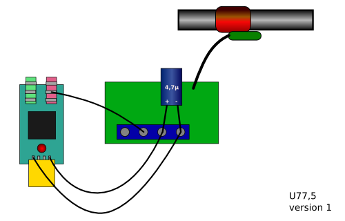

U77,5 - a set of USB sound / DCF77 tools
U77,5 is an open-source project under the GNU Lesser Public License
Decoding the German DCF77 time signal per USB sound card and a receiver module, setting the system time. "U" stands for USB and "77,5" for the full 77.5 kHz frequency of the time signal.
Sites
Assembly Layout

Full partlist available from the German online shop http://www.conrad.de
- 994000-62 SpeedLink USB 2.0 Mini-Soundkarte
- 641138-62 DCF Empfängerplatine
- 468266-62 EL Kondensator 47 µF 25 V
No Warranty
Like explained in Lesser GPL you get no warranty at all. We are not responsible for anything, even if you damage your hardware. You should know that we experimented - not knowing what we do. We are just lucky that it works for us.
Good Luck!
Links
http://de.wikipedia.org/wiki/DCF77
http://en.wikipedia.org/wiki/DCF77
Contact
Comments, suggestions and bug-reports go to
Hayati Aygün <h_ayguen()web!de>
Detlef Reichl <detlef!reichl()gmx!org>